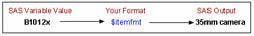

Overview
Introduction
In the Chapter 4, Creating List Reports, you learned to associate formats with variables either temporarily or permanently.
But sometimes you might want to create custom formats for displaying variable values. For example, you can format a product number so that it is displayed as descriptive text, as shown below.
Using the FORMAT procedure, you can define your own formats for variables. You can store your formats temporarily or permanently, and you can display a list of all your formats and descriptions of their values.
Objectives
In this chapter, you learn to
- create your own formats for displaying variable values.
- permanently store the formats that you create.
- associate your formats with variables.
Introduction to PROC FORMAT
Sometimes variable values are stored according to a code. For example, when the PRINT procedure displays the data set Perm.Empinfo, notice that the values for JobTitle are coded, and they are not easily interpreted.
| Obs | FirstName | LastName | JobTitle | Salary |
|---|---|---|---|---|
| 1 | Donny | Evans | 112 | 29996.63 |
| 2 | Lisa | Helms | 105 | 18567.23 |
| 3 | John | Higgins | 111 | 25309.00 |
| 4 | Amy | Larson | 113 | 32696.78 |
| 5 | Mary | Moore | 112 | 28945.89 |
| 6 | Jason | Powell | 103 | 35099.50 |
| 7 | Judy | Riley | 111 | 25309.00 |
| 8 | Neal | Ryan | 112 | 28180.00 |
You can display more descriptive values for these variables. Here is how a report that contains formatted values for the variable JobTitle might look. The predefined SAS formats cannot help here.
| Obs | FirstName | LastName | JobTitle | Salary |
|---|---|---|---|---|
| 1 | Donny | Evans | technical writer | 29996.63 |
| 2 | Lisa | Helms | text processor | 18567.23 |
| 3 | John | Higgins | assoc. technical writer | 25309.00 |
| 4 | Amy | Larson | senior technical writer | 32696.78 |
| 5 | Mary | Moore | technical writer | 28945.89 |
| 6 | Jason | Powell | manager | 35099.50 |
| 7 | Judy | Riley | assoc. technical writer | 25309.00 |
| 8 | Neal | Ryan | technical writer | 28180.00 |
However, you can use the FORMAT procedure to define your own formats for displaying values of variables.
Invoking PROC FORMAT
To begin a PROC FORMAT step, you use a PROC FORMAT statement.
General form, PROC FORMAT statement:
PROC FORMAT <options>;
where options includes
- LIBRARY=libref specifies the libref for a SAS data library that contains a permanent catalog in which user-defined formats are stored.
- FMTLIB prints the contents of a format catalog.
Any time you use PROC FORMAT to create a format, the format is stored in a format catalog. If the SAS data library does not already contain a format catalog, SAS automatically creates one. If you do not specify the LIBRARY= option, then the formats are stored in a default format catalog named Work.Formats.
As the libref Work implies, any format that is stored in Work.Formats is a temporary format that exists only for the current SAS session. At the end of the current session, the catalog is erased.
Permanently Storing Your Formats
You can store your formats in a permanent format catalog named Formats when you specify the LIBRARY= option in the PROC FORMAT statement.
PROC FORMAT LIBRARY=libref;
But first, you need a LIBNAME statement that associates the libref with the permanent SAS data library in which the format catalog is to be stored. It is recommended, but not required, that you use the word Library as the libref when creating your own permanent formats.
libname library 'c:\sas\formats\lib'; libname library 'c:\data\setup\library'; libname library 'c:\sales\ancillary\libset';
When you associate a permanent format with a variable in a subsequent DATA or PROC step, you use the Library libref to reference the location of the format catalog.
We'll discuss the use of permanent user-defined formats later, after you learn how to create them.
Now, any format that you create in this PROC FORMAT step is stored in a permanent format catalog called Library.Formats.
libname library 'c:\sas\formats\lib';
proc format library=library;
... ;
run;
In the program above, the catalog Library.Formats is located in the SAS data library C:\Sas\Formats\Lib, which is referenced by the libref Library.
You can use LIB= as an abbreviation for the LIBRARY= option.
proc format lib=library;
You can specify a catalog name in the LIBRARY= option, and you can store formats in any catalog. The catalog name must conform to SAS naming conventions.
proc format lib=library.catalog;
Now that you know how to store your own formats, let's learn how to create them.
Defining a Unique Format
You can use the VALUE statement to define a format for displaying one or more values.
General form, VALUE statement:
VALUE format-name range1='label1' range2='label2' ...;
where
- format-name names the format that you are creating. The format name
- must begin with a dollar sign ($) if the format applies to character data.
- cannot be longer than eight characters.
- cannot be the name of an existing SAS format.
- cannot end with a number.
- does not end in a period when specified in a VALUE statement.
- range specifies one or more variable values and a character string or an existing format.
- label is a text string enclosed in quotation marks.
Notice that the statement begins with the keyword VALUE and ends with a semicolon after all the labels have been defined. The following VALUE statement creates the JOBFMT format to specify descriptive labels that will later be assigned to the variable JobTitle:
proc format lib=library;
value jobfmt
103='manager'
105='text processor'
111='assoc. technical writer'
112='technical writer'
113='senior technical writer';
run;
The VALUE range specifies
- a single value, such as 24 or 'S'.
- a range of numeric values, such as 0-1500.
- a range of character values enclosed in quotation marks, such as 'A'-'M'.
- a list of unique values separated by commas, such as 90,180,270 or 'B','D','F'. These values can be character values or numeric values, but not a combination of character and numeric values (because formats themselves are either character or numeric).
When the specified values are character values, they must be enclosed in quotation marks and must match the case of the variable's values. The format's name must also start with a dollar sign ($). For example, the VALUE statement below defines the $GRADE format, which displays the character values as text labels.
proc format lib=library;
value $grade
'A'='Good'
'B'-'D'='Fair'
'F'='Poor'
'I','U'='See Instructor';
run;
When the specified values are numeric values, they are not enclosed in quotation marks, and the format's name should not begin with a dollar sign ($). The VALUE statement that defines the format JOBFMT assigns labels to numeric values.
proc format lib=library;
value jobfmt
103='manager'
105='text processor'
111='assoc. technical writer'
112='technical writer'
113='senior technical writer';
run;
Specifying Value Ranges
You can specify a non-inclusive range of numeric values by using the "less than" symbol (<) to avoid any overlapping. In this example, the range of values from 0 to less than 13 is labeled as child. The next range begins at 13, so the label teenager would be assigned to the values 13 to 19.
proc format lib=library;
value agefmt
0-<13='child'
13-<20='teenager'
20-<65='adult'
65-100='senior citizen';
run;
You can also use the keywords LOW and HIGH to specify the lower and upper limits of a variable's value range. The keyword LOW does not include missing numeric values. The keyword OTHER can be used to label missing values as well as any values that are not specifically addressed in a range.
proc format lib=library;
value agefmt
low-<13='child'
13-<20='teenager'
20-<65='adult'
65-high='senior citizen'
other='unknown';
run;
| Note | If applied to a character format, the keyword LOW includes missing character values. |
|---|
When specifying a label for displaying each range, remember to
- enclose the label in quotation marks.
- limit the label to 256 characters.
- use double quotation marks if you want an apostrophe to appear in the label, as in this example:
000="employee's jobtitle unknown";
Defining Multiple Formats
To define several formats, you can use multiple VALUE statements in a single PROC FORMAT step. In this example, each VALUE statement defines a different format.
proc format lib=library;
value jobfmt
103='manager'
105='text processor'
111='assoc. technical writer'
112='technical writer'
113='senior technical writer';
value $respnse
'Y'='Yes'
'N'='No'
'U'='Undecided'
'NOP'='No opinion';
run;
The SAS log prints notes informing you that the formats have been created.
SAS Log (Partial Listing)
01 proc format lib=library;
02 value jobfmt
03 103='manager'
04 105='text processor'
05 111='assoc. technical writer'
06 112='technical writer'
07 113='senior technical writer';
NOTE: Format JOBFMT has been written to LIBRARY.FORMATS.
Because you have defined the JOBFMT format for displaying the values of JobTitle, the format can be used with PROC PRINT for more legible output.
| (Without Format) | |||
|---|---|---|---|
| FirstName | LastName | JobTitle | Salary |
| Donny | Evans | 112 | 29996.63 |
| Lisa | Helms | 105 | 18567.23 |
| John | Higgins | 111 | 25309.00 |
| Amy | Larson | 113 | 32696.78 |
| Mary | Moore | 112 | 28945.89 |
| Jason | Powell | 103 | 35099.50 |
| (With Format) | |||
| FirstName | LastName | JobTitle | Salary |
| Donny | Evans | technical writer | 29996.63 |
| Lisa | Helms | text processor | 18567.23 |
| John | Higgins | assoc. technical writer | 25309.00 |
| Amy | Larson | senior technical writer | 32696.78 |
| Mary | Moore | technical writer | 28945.89 |
| Jason | Powell | manager | 35099.50 |
The next section shows how to apply your formats to variables.
Associating User-Defined Formats with Variables
Referencing Your Formats
Remember that permanent, user-defined formats are stored in a format catalog. For example, the program below stores the format JOBFMT in a catalog named Library.Formats, which is located in the directory C:\Sas\Formats\Lib in the Windows environment.
libname library 'c:\sas\formats\lib';
proc format lib=library;
value jobfmt
103='manager'
105='text processor'
111='assoc. technical writer'
112='technical writer'
113='senior technical writer';
run;
To use the JOBFMT format in a subsequent SAS session, you must assign the libref Library again.
libname library 'c:\sas\formats\lib'; data ... ;
SAS searches for the format JOBFMT in two libraries, in this order:
- the temporary library referenced by the libref Work.
- a permanent library referenced by the libref Library.
SAS uses the first instance of a specified format that it finds.
| Info | You can delete formats by using PROC CATALOG or the SAS Explorer window. |
|---|
Assigning Your Formats to Variables
Just as with SAS formats, you associate a user-defined format with a variable in a FORMAT statement.
data perm.empinfo;
infile empdata;
input @9 FirstName $5. @1 LastName $7. +7 JobTitle 3.
@19 Salary comma9.;
format salary comma9.2 jobtitle jobfmt.;
run;
| Note | Don't worry about @ pointer controls in programs in this chapter (as in @9FirstName), because they don't affect the behavior of formats. To learn more about using @ pointer controls in SAS programs, see Chapter, Reading Raw Data in Fixed Fields. |
|---|
Remember, you can place the FORMAT statement in either a DATA step or a PROC step. By placing the FORMAT statement in a DATA step, you can permanently associate a format with a variable. Note that you do not have to specify a width value when using a user-defined format.
When you submit the PRINT procedure, the output for Perm.Empinfo now shows commas in the values for Salary, and it shows descriptive labels in place of the values for JobTitle.
proc print data=perm.empinfo; run;
| Obs | FirstName | LastName | JobTitle | Salary |
|---|---|---|---|---|
| 1 | Donny | Evans | technical writer | 29,996.63 |
| 2 | Lisa | Helms | text processor | 18,567.23 |
| 3 | John | Higgins | assoc. technical writer | 25,309.00 |
| 4 | Amy | Larson | senior technical writer | 32,696.78 |
| 5 | Mary | Moore | technical writer | 28,945.89 |
| 6 | Jason | Powell | manager | 35,099.50 |
| 7 | Judy | Riley | assoc. technical writer | 25,309.00 |
| 8 | Neal | Ryan | technical writer | 28,180.00 |
When associating a format with a variable, remember to
- use the same format name in the FORMAT statement that you specified in the VALUE statement.
- place a period at the end of the format name when it is used in the FORMAT statement.
libname library 'c:\sas\formats\lib'; proc format lib=library; value jobfmt 103='manager' 105='text processor' 111='assoc. technical writer' 112='technical writer' 113='senior technical writer'; run;
libname perm 'c:\data\perm'; filename empdata 'c:\data\temp\newhires.txt'; data perm.empinfo; infile empdata; input @9 FirstName $5. @1 LastName $7. +7 JobTitle 3. @19 Salary comma9.; format salary comma9.2 jobtitle jobfmt.; run;
Notice that a period is not required at the end of the SAS format COMMA9.2 in the FORMAT statement. The period in this format occurs between the width specification and the decimal place specification. All formats contain periods, but only user-defined formats invariably require periods at the end of the name.
If you do not format all of a variable's values, then those values that are not listed in the VALUE statement are printed as they appear in the SAS data set, as shown in the following example:
proc format lib=library;
value jobfmt
103='manager'
105='text processor';
112='technical writer';
run;
proc print data=perm.empinfo;
run;
| Obs | FirstName | LastName | JobTitle | Salary |
|---|---|---|---|---|
| 1 | Donny | Evans | 112 | 29,996.63 |
| 2 | Lisa | Helms | text processor | 18,567.23 |
| 3 | John | Higgins | 111 | 25,309.00 |
| 4 | Amy | Larson | 113 | 32,696.78 |
| 5 | Mary | Moore | 112 | 28,945.89 |
| 6 | Jason | Powell | manager | 35,099.50 |
| 7 | Judy | Riley | 111 | 25,309.00 |
| 8 | Neal | Ryan | technical writer | 28,180.00 |
Displaying a List of Your Formats
When you build a large catalog of permanent formats, it can be easy to forget the exact spelling of a specific format name or its range of values. Adding the keyword FMTLIB to the PROC FORMAT statement displays a list of all the formats in your catalog, along with descriptions of their values.
libname library 'c:\sas\formats\lib'; proc format library=library fmtlib; run;
When you submit this PROC step, a description of each format in your permanent catalog is displayed as output.
| SAS Output | ||
|---|---|---|
| Format Name: JobFmt Length: 23 Number of Values: 5 Min Length: 1 Max Length: 40 Default Length: 23 Fuzz: Std | ||
| START | END | LABEL (VER. 9.00 29AUG2002:11:13:14) |
| 103 | 103 | manager |
| 105 | 105 | text processor |
| 111 | 111 | assoc. technical writer |
| 112 | 112 | technical writer |
| 113 | 113 | senior technical writer |
In addition to the name, range, and label, the format description includes the
- length of the longest label.
- number of values defined by this format.
- version of SAS that this format is compatible with.
- date and time of creation.
Summary
Text Summary
Invoking PROC FORMAT
The FORMAT procedure enables you to substitute descriptive text values for the values of variables. The LIBRARY= option stores the new formats in a specified format catalog. Otherwise, they are stored in a default catalog named Work.Formats. The keyword FMTLIB displays the formats and values that are currently stored in the catalog. The VALUE statement defines a new format for the values of a variable.
Defining a Unique Format
Formats can be specified for a single value, a range of numeric values, or a list of unique values. Unique values must be separated by commas. When character values are specified, the values must be enclosed in quotation marks, and the format name must begin with a dollar sign ($). You can specify non-inclusive numeric ranges by using the "less than" sign (<). The keywords HIGH, LOW, and OTHER can be used to label values that are not specifically addressed in a range.
Associating User-Defined Formats with Variables
To access the permanent, user-defined formats in a format catalog, you'll need to use a LIBNAME statement to reference the catalog library. To associate user-defined formats with variables in the FORMAT statement, use the same format names in both the FORMAT and VALUE statements, but place a period at the end of the format name when it is used in the FORMAT statement.
Points to Remember
- Formats- even permanently associated ones- do not affect the values of variables in a SAS data set. Only the appearance of the values is changed.
- A user-defined format name must begin with a dollar sign ($) when it is assigned to character variables. A user-defined format name cannot end with a number.
- Use two double quotation marks when you want an apostrophe to appear in a label.
- Place a period at the end of the format name when you use the format name in the FORMAT statement.